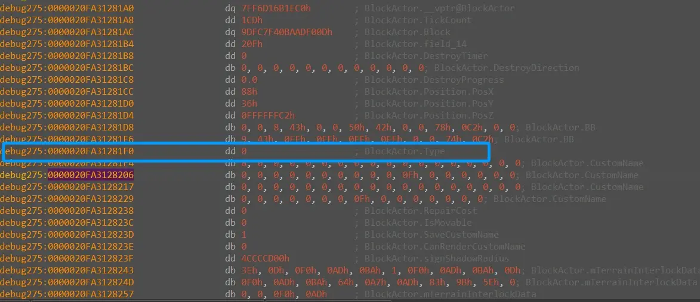

众所周知，在基岩版我的世界中，红石玩家制作的机器无论再怎么精妙，仍然限制在mojang设置的框架内。一次更新，修改一些代码就能改变无数的机制。
那么有没有一种可能，让玩家只通过原版游戏内的操作，影响游戏运行的规律呢？
“类型混淆是一种程序中违反类型系统的错误行为，它发生在对象被当作错误类型来使用时，导致对其成员的访问或操作出现未定义行为（UB）。”——Chatgpt
在基岩版原版红石（生电中），尽管很少人知道原理，但方块实体分离这个前置技术已经被发掘出来了将近一个月并得到了一定规模的应用。
“方块实体（Block Entity或Tile Entity）是与各类方块关联的附加数据，作为方块的各种状态有穷集合的补充“——minecraft wiki
方块实体在方块创建时被创建，在方块被破坏时被删除。但实际上两者的生命周期并没有依赖关系。方块大多数时候是通过用自身的坐标查表获取同位置的方块实体的
这就导致了，如果你成功让一个方块实体独立于方块存在，它可以被别的有方块实体的方块继承并修改。这种情况下方块实体会被当成另一个blockactor子类的方块实体去使用，也就造成了所谓的类型混淆。
通过这种方法，我们可以真正意义上改写方块的性质
尽管大多数时候方块查找自身位置的方块实体时，会检测方块实体的type变量。但mojang的程序员仍然粗心的漏掉了一些方块，这就给了我们可乘之机。
第一类这种魔法是在今年2月份发现的活塞粘方块特性。
每个方块实体在游戏运行时，想获取某个成员变量的值都是通过起始地址+偏移量的指针取值的。这就导致了，如果某个方块获取自身方块实体的某个值时，我们可以用另一类方块实体伪装成这个方块实体，让它从同样的偏移量中得到错误的值。
第二类魔法是通过方块修改方块实体的某个值。
然而，这些方法能修改出的结果，或获取到的错误的值都很有限（包括由于每个方块实体都是blockactor的子类，这导致了方块实体前200字节，也就是blockactor父类成员变量占的空间，是不可修改的）
在讲第三类魔法时，需要先说明一些方块实体的特性。
方块实体是否存在于世界上，其实并不取决于方块实体对象是否存在于内存中
正如前文所说，方块查找方块实体，区块更新方块实体都是靠一个哈希链表（Levelchunk的BlockEntities成员变量）查找的。这个表实际上只存储了指向真实对象的指针。
也就是方块实体能否被找到，改变实际上取决于这个指针。
很明显的一个例子就是movingblock在记录某个方块实体的指针后，对这个方块实体执行了removeblockentity函数，但实际上方块实体对象并没有被释放。同时在mb转b时也只是将方块实体重新加入了表中。
第二个特性是方块实体在去序列化时，执行去序列化的levelchunk::deserializeblockentities函数有很大概率会将同类的方块实体在内存上连续排列（可能是因为两个方块实体对象创建的时候之间没有别的分配和释放内存的操作，同时去序列化时游戏刚刚开始运行，堆上还有很多足够大的空闲块）
第三个特性是方块实体并不是在方块被破坏的时候释放的。方块实体会在方块被破坏时被加入区块的preservedBlockEntities列表。在Levelchunk::tickBlockEntities时才会遍历这个列表，释放其中的方块实体。
知道了这些特性，我们就可以想出第三种魔法——通过操控堆布局，让多个方块实体在内存上形成一定结构从而使用类型混淆跨对象修改变量
1，第一个应用就是活塞粘方块特性
这个特性是因为活塞方块在检测自己的推出状态时，是通过检测自身位置活塞方块实体的progress变量确定的。
progress变量在内存上距离活塞方块实体的虚表指针204字节
我们可以通过一个偏移204字节，并且值不为0的另一个方块实体伪装成活塞方块实体去让活塞以为它自己是推出状态。
同时活塞在推方块时，会检测这个方块有没有secondpart，如果有就会将secondpart的位置的方块检测并一起推动。
活塞在推出状态下，secondpart的位置就是活塞臂的位置，这时候可以换成别的方块，由于活塞并没有真正推出，所以它是可以被推动的，同时带着活塞臂的位置的方块一起动。
具体效果可以参考https://www.bilibili.com/video/BV1hqKGeZEnU/?spm_id_from=333.1387.homepage.video_card.click
2 一直隔空推方块的“钟”
钟在被敲击时，如果自身的cooldown变量为0，则会将这个值设置为300.
在代码层面的行为是这样的：检测this指针偏移204字节的值，如果不为零，就将这之后的4字节的值设为整数300
前文提到了活塞的progress值也是在204字节。我们就可以用活塞方块实体伪造钟的方块实体，让钟修改活塞的progress
具体修改时因为progress是浮点数，活塞读取这个修改后的值后是4.2*10^43
由于progress会影响活塞推出，这就可以制作凭空推方块的“钟”了
参考https://www.bilibili.com/video/BV1Gno2YNEeh/?spm_id_from=333.1387.homepage.video_card.click
还有一些其它的同类魔法，比如用活塞破坏箱子secondpart位置实现破坏几亿区块外的方块等等。
重要的是第三类魔法。
如何在内存中让两个对象连续排列？
这是一个很难的问题，因为operator new出来的对象会被随机分配到堆上（地址空间随机化）
但游戏中还是有些规律的，除了本文第一部分提到的以外，MovingBlock方块实体在去序列化时，会递归创建自身记录的所有方块实体（嵌套mb的情况）。
这几乎百分之百在内存上形成一个既是数组又是链表的结构。
而每个方块实体之间的距离，是352字节（计算参考https://www.bilibili.com/opus/1054434159340027957?spm_id_from=333.1387.0.0）
巧的是，我们可以用炼药锅类型混淆修改方块实体偏移432字节的位置，也就是第一个方块实体会修改到第二个方块实体的第80字节的值，变成0
这个位置，正好决定了方块实体是什么类型（type变量）的。
用这个特性，成功创造了Type0方块实体

Type0方块实体有很多用途（比如让自身方块无法操作它）
最后，让我们展望一下这类方块实体的未来。
也许，可以通过第三类魔法修改type值至任意，实现所有类的类型混淆
也许，可以通过修改活塞progress到很大，真正实现全方向的远程0t推出
甚至，可以通过第三类魔法，将其它对象排列到方块实体后面修改值。影响到整个世界范围的规律。